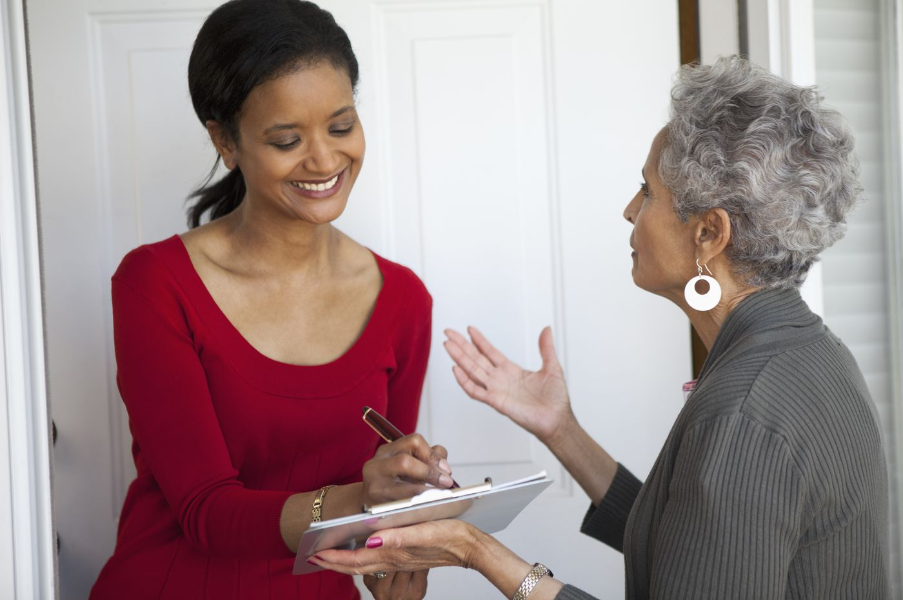

Guide To Canvassing

Do you have a candidate you are passionate about?
Is there someone running for office that strongly aligns with your values that you want to see win?
Is there a race that is so close and you feel either strongly in favor of one candidate or strongly against another?
Do you feel like there is so much at stake in this election that it is keeping you up at night and think maybe you’ll feel better if you take action?
If so, you should consider canvassing!
Canvassing, which is going door-to-door talking to voters, is a great way to have a positive impact on a campaign and a candidate winning. It is what some call “the ground game” or having “boots on the ground”. A winning campaign strategy depends on more than just fundraising and paid advertising, like mailers and sponsored posts, it also relies on volunteers, like you.
How do you sign up to canvass?
Contact the campaign directly through their website (some campaigns will have a “volunteer” section, but “contact us” can also work), calling or emailing their office, sending a message via social media, or by visiting their campaign office.
If you see a campaign staffer or volunteer at an event, like a march or neighborhood meeting, approach them and ask about opportunities to volunteer.
What to expect:
Once you sign up, you will be contacted by someone on the campaign asking for your availability and confirming you for a date, time, and meet up location. Be patient. Campaigns may be staffed with volunteers or overworked staffers, so it might take a few days. Don’t be shy about following up.
In general, you will be asked to commit to a 2 to 3 hour canvassing shift. If you have any conflicts that come up, it’s important to communicate that to the campaign staff upfront. Whether you are going to be late, need to leave early, or must cancel, inform the campaign so that they can make accommodations.
Campaigns appreciate all volunteers. You can sign up for one shift or multiple shifts. You may find after your first time canvassing that you really like talking to voters and find if fulfilling and want to sign up again.
When you first arrive to canvass, you will sign in and be asked a few questions, such as ‘is this your first time’. If you are a first time canvasser, you’ll most likely get paired up with someone experienced who will show you the ropes.
You will be trained by someone from the campaign on how to read through the script, how to answer questions from voters, how to hand out literature (brochures), and how to fill out the canvassing sheets.
You will be given a route with a list of targeted addresses and voters. Don’t worry if you don’t talk to every household or if the majority of people are not home; this is to be expected. Even “not home” is data for the campaign, and data is good to have! The campaign will also make a point to try again another time to a household missed or not at home.
Most campaigns will send you to households where they expect the residents will be receptive to their message, so canvassing is rarely reminiscent of twitter or Facebook arguments.
Tips:
Wear comfortable walking shoes. Recently elected Congresswoman Alexandria Ocasio-Cortez’s campaign shoes became famous when they went on display with her quote, “I knocked on doors until rainwater came through my soles…We won (because) we out-worked the competition. Period”.
Dress appropriately for the weather; you will still be asked to go out even if the weather is not ideal. And when you do go out in snow or rain, it’s a sign of your commitment to the candidate and anyone who answers the door will see that and respect it.
Pack a small snack and bring a water bottle. You don’t want to be hangry talking to voters about your candidate.
Be honest and authentic when speaking with voters. You’ll have a script, but it will be most sincere if you speak as yourself with the script as a helpful tool, not words to recite verbatim. Be yourself.
Have fun. Bring a friend if you can! But you might make new friends along the way.